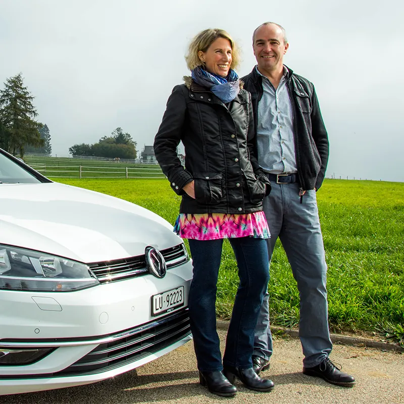

Fahrschule für Auto, seit 2006 in Sempach
Fahren lernen in der Region Sempach.
Bei uns erwartet Sie eine kompetente und auf Ihre Bedürfnisse angepasste Fahrausbildung, in einem angenehmen und freundlichen Umgangston.
- Seit 2006Fahrschule in Sempach
- 50 Minutenpro Fahrlektion
- VKU bei uns4 Abende à 2 Lektionen
- CHF 50.– Gutscheinfür Ihren WAB-Kurs
Angebot
Alles für Ihren Führerausweis
Fahrstunden und Verkehrskundeunterricht bei uns, dazu alle Infos rund um Lernfahrausweis und WAB-Kurs.
Fahrstunden
Eine kompetente Fahrausbildung, die sich nach Ihnen richtet: vom ersten Meter bis zur praktischen Prüfung.
- Lektion à 50 Minuten
- Im 5er-Abo CHF 88.– pro Lektion
VKU
Obligatorisch und bei uns im Kurs: viele Hintergrundinfos, Anregungen und Tipps, die Ihre praktische Fahrausbildung optimal unterstützen.
- 4 Abende zu 2 Lektionen
- Nach bestandener Theorieprüfung
WAB-Kurs
Nach der Prüfung gilt Ihr Ausweis 3 Jahre auf Probe. Mit dem obligatorischen Weiterbildungstag beantragen Sie den definitiven Führerausweis.
- Im ersten Jahr nach der Prüfung
- Mit unserem Partner WAB Zentralschweiz
Sie haben den Führerausweis schon?
Sie fühlen sich auf der Strasse aber unsicher? Wir bieten Ihnen individuelle Unterstützung an oder machen Sie fit für eine Kontrollfahrt.
Weg zum Führerausweis
In 5 Schritten ans Ziel
- 1
Gesuch einreichen
Formular Nr. 12 beim Strassenverkehrsamt Luzern.
- 2
Theorieprüfung
Bestanden? Dann erhalten Sie den Lernfahrausweis.
- 3
Fahrstunden und VKU
Üben mit uns und den VKU an vier Abenden besuchen.
- 4
Praktische Prüfung
Mit der VKU-Bestätigung anmelden. Danach gibt es den Ausweis auf Probe.
WAB-Kurs
Im ersten Jahr besuchen, dann wird der Ausweis definitiv.
Unser Auto
Sie lernen auf einem VW Golf
Unser Fahrschulauto ist ein weisser VW Golf mit TSI-Benzinmotor. Die wichtigsten Daten auf einen Blick:
- 125 PS92 kW Leistung
- TSI Benzin4 Zylinder
- 1400 ccmHubraum
- BildergalerieAlle Fotos ansehen
Preise
Transparent von Anfang an
Bei bestandener Führerprüfung erhalten Sie von uns einen Gutschein im Wert von CHF 50.– für den WAB-Kurs. Theorie-Lernsoftware: Angebot und Preise auf Anfrage.

in Sempach
Über uns
Wir freuen uns auf eine gute Zusammenarbeit
Dank regelmässigen Aus- und Weiterbildungen bleibt unsere Fahrschule stets auf dem neusten Stand. Gerne geben wir unser Wissen an Sie weiter. Ein angenehmer und freundlicher Umgangston ist uns wichtig, damit Sie in einer positiven Lernatmosphäre effizient und motiviert ans Ziel kommen.
Wir freuen uns auf Sie!
Melden Sie sich für Ihre erste Fahrstunde oder bei Fragen zum VKU, telefonisch oder per E-Mail.